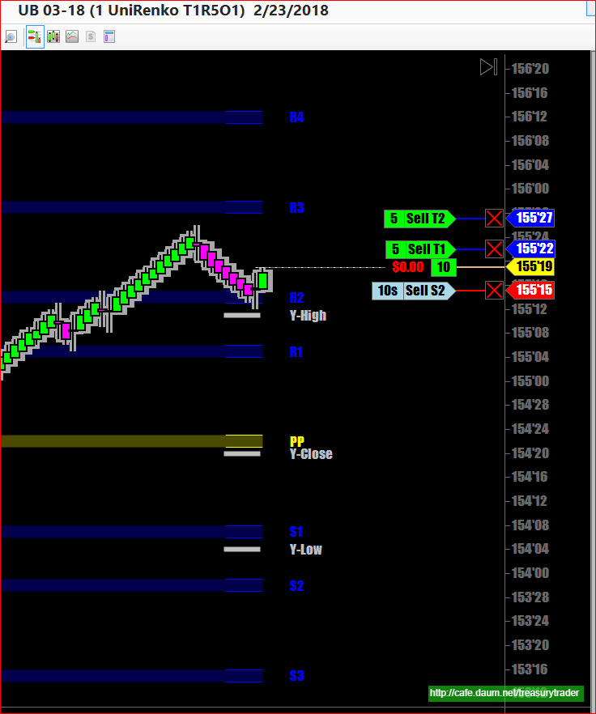
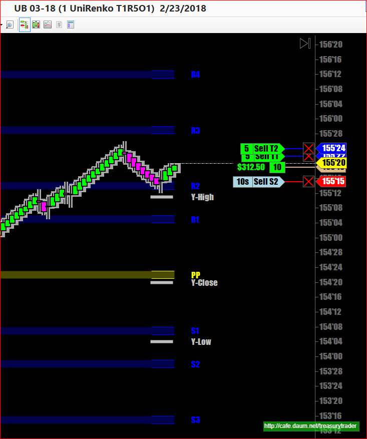
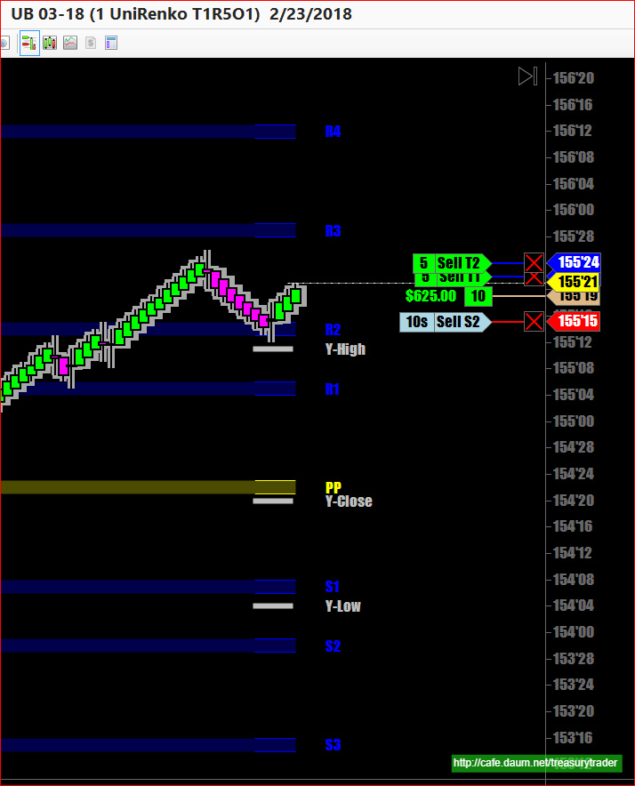
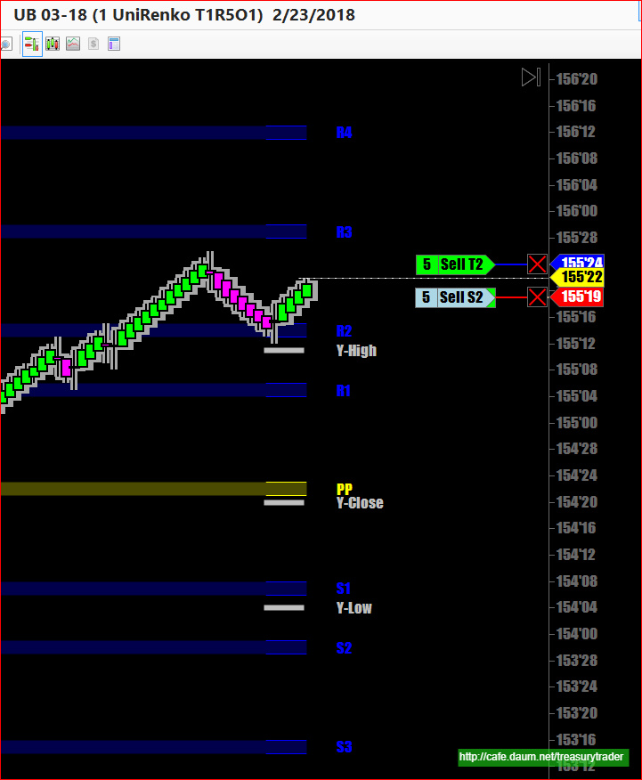
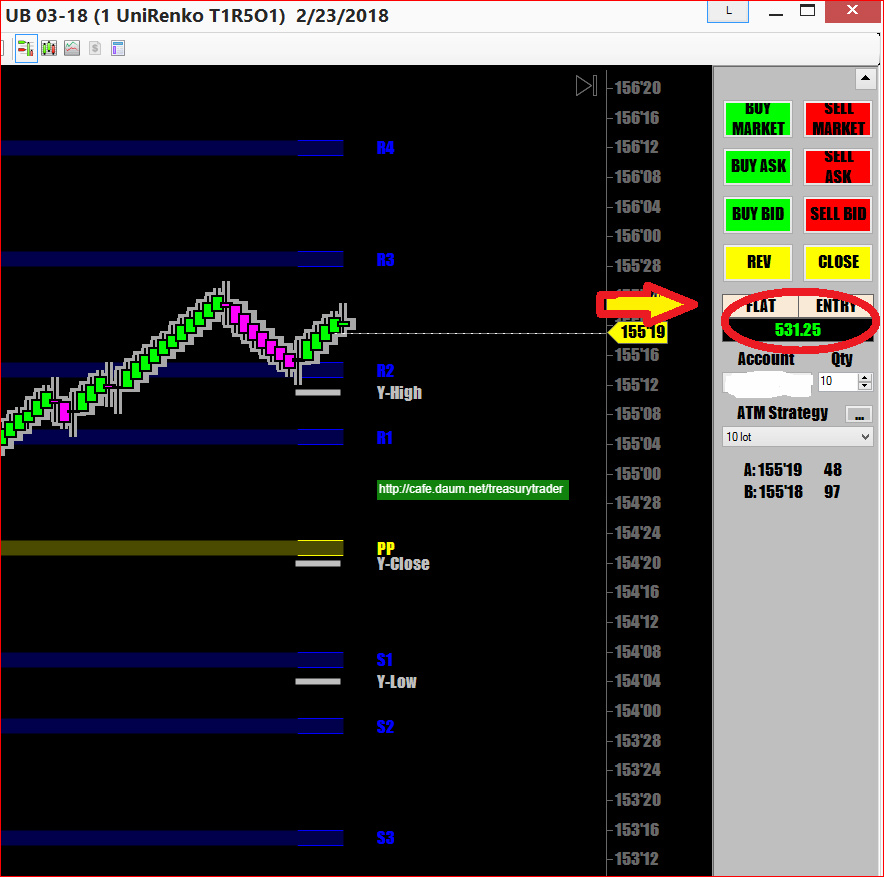

금요일은 중요한 지표발표가 없으면 대부분 조용함
오늘은 FOMC의 더둘리가 한말씀중인데 뭐 별로 영양가는 없음
덕분에 국채선물은 증시방향따라 오락가락
증시는 지금 200일 이평선 맞고 곧바로 반등했지만 이미 데드크로스가 발생했고
기관들도 이미 보유 물량들을 많이 빼고 있는중이라
예전같은 황소장은 당분간은 없을거란 생각임
일봉상 중요저항선인 이평선 맞는 순간
피봇 저항선인 R2에서 매수신호발생
전체적으로는 추세 상승장이라 당연히 상승쪽으로 공략해야 함
Trend is your friend !!!



일차 절반 매도 성공
곧바로 Stop order를 전진배치 수익보존

곧바로 뒤로 밀려버림
이번 매매는 거기까지..
오늘 새벽장에 힘차게 움직이더니만 막상 장 오픈하고나니 지리멸렬..
힘이 하나도 없음 큰 거래도 안터지고..

지금 계속 지켜보는데 조금 반등이 시작됨
주말이니 한번만 더 매매하고 셔터 내릴 예정임
모두 좋은 주말 되시길..